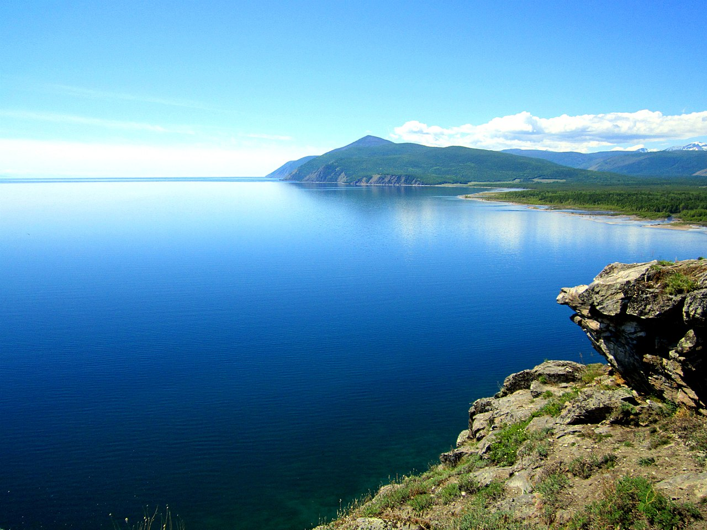
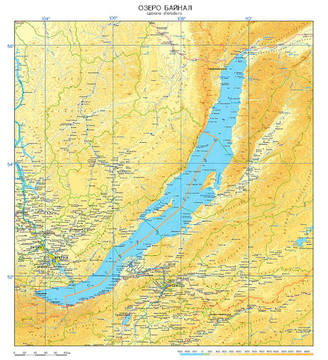
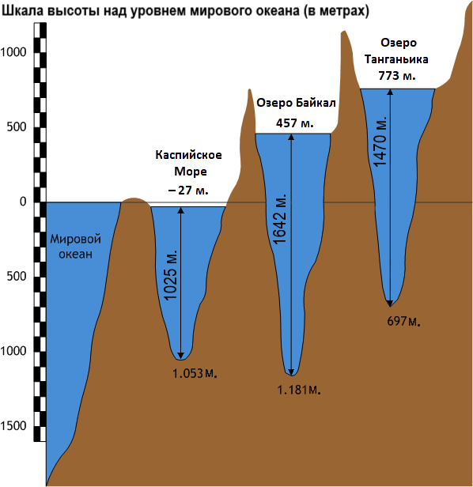

Озеро Байкал

(фото взято с wikipedia.org)
Географическое положение
Озеро Байкал находится в центре Азии на границе Иркутской области и Республики Бурятия в Российской Федерации. Озеро протянулось с юго-запада на северо-восток на 636 км в виде гигантского полумесяца. Ширина водоёма колеблется в пределах от 24 до 79 км. Дно Байкала в самой глубокой его части на 1187 метров ниже уровня Мирового океана.

(фото взято с sharada.ru)
Глубины
Байкал — самое глубокое озеро на Земле. Современное значение максимальной глубины озера — 1642 м.
Средняя глубина озера Байкал составляет-744,4 м. Эта глубина превышает максимальные глубины многих очень глубоких озёр. Кроме Байкала, на Земле только два озера имеют глубину более 1000 метров: Танганьика (1470 м) и Каспийское море (1025 м).
Площадь водной поверхности Байкала — 31 722 км² (без учёта островов), что примерно равно площади таких стран, как Бельгия или Нидерланды. По площади водного зеркала Байкал занимает седьмое место среди крупнейших озёр мира. Площадь водосборного бассейна — 571 тыс. км². Длина береговой линии — 2000 км.

(фото взято с wikipedia.org)
Объём воды
Запасы воды в Байкале гигантские — 23 615,39 км³ (около 19 % от 123 тыс. км³ всех мировых запасов озёрной пресной воды). По объёму запасов пресной воды Байкал занимает первое место в мире среди озёр. В Байкале воды больше, чем во всех вместе взятых пяти Великих озёрах Северной Америки (Верхнее, Мичиган, Гурон, Эри, Онтарио), и в 25 раз больше, чем в Ладожском озере. Если же брать абсолютную величину среди всех озёр мира, то Байкал по объёму воды уступает разве что Каспийскому морю.
Климат
Водная масса Байкала оказывает влияние на климат прибрежной территории. Зима здесь бывает мягче, а лето — прохладнее. Наступление весны на Байкале задерживается на 10—15 дней по сравнению с прилегающими районами, а осень часто бывает довольно продолжительной.
Максимальная зафиксированная температура воздуха — +34 °C, а средняя повышается в последние годы.
Район Байкала отличается большой суммарной продолжительностью солнечного сияния. Например, в посёлке Большое Голоустное она доходит до 2524 часов, что больше, чем на черноморских курортах. Дней без солнца в году в этом же населённом пункте бывает только 37, а на острове Ольхон — 48.
Особые черты климата обусловлены байкальскими ветрами, которые имеют собственные названия — баргузин, сарма, верховик, култук и другие.
(информация взята с wikipedia.org)